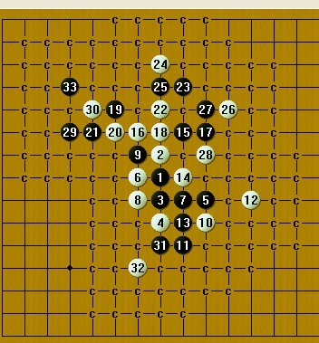
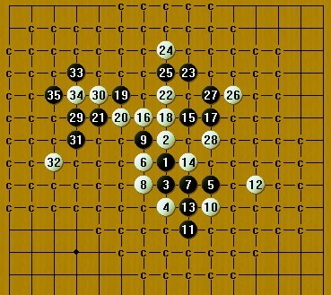

松月30手后黑该怎么杀？
#1 松月30手后黑该怎么杀？ 作者：新手下棋 发表时间：2010-5-16 0:32:59
=======上图对应的爱五子棋谱代码如下，以便你拆解：========
h8h9h7h6j7g8i7g7g9j6i5i8i6l7i10g10j10h10f11f10e10h11i12h13h12k11j11j9d10e11
======================================================
听人说到29手后，黑必胜，想了半天，别的30都会，就这个没想出怎么杀，等待高手指导一下。
［ gerbo 于 2010-5-19 16:15:46 时花20金币送鲜花一朵］
#2 Re:松月30手后黑该怎么杀？ 作者：gerbo 发表时间：2010-5-16 7:54:02
 杀不出，谁能杀出来那就NB了。
杀不出，谁能杀出来那就NB了。
#3 Re:松月30手后黑该怎么杀？ 作者：心上人 发表时间：2010-5-16 8:01:50
黑31走H5个人觉得应该作杀#4 Re:松月30手后黑该怎么杀？ 作者：五子痴 发表时间：2010-5-16 8:19:25
=======上图对应的爱五子棋谱代码如下，以便你拆解：========
h8h9h7h6j7g8i7g7g9j6i5i8i6l7i10g10j10h10f11f10e10h11i12h13h12k11j11j9d10e11e6f5d9c8e9
======================================================
这个31可杀的
［ 新手下棋 于 2010-5-16 19:16:16 时花20金币送鲜花一朵］
#5 Re:松月30手后黑该怎么杀？ 作者：新手下棋 发表时间：2010-5-16 17:12:01
 这个31我还真没想过，如果按照楼上的下法，那32手走D7,C8,G4这三个点之后，黑怎么杀呢？可能问得有点幼稚，但我真得没想出来，希望来个图说明一下，或者来个小地毯最好了，多谢！
这个31我还真没想过，如果按照楼上的下法，那32手走D7,C8,G4这三个点之后，黑怎么杀呢？可能问得有点幼稚，但我真得没想出来，希望来个图说明一下，或者来个小地毯最好了，多谢！
#6 Re:松月30手后黑该怎么杀？ 作者：五子痴 发表时间：2010-5-16 21:40:31
=======上图对应的爱五子棋谱代码如下，以便你拆解：========
h8h9h7h6j7g8i7g7g9j6i5i8i6l7i10g10j10h10f11f10e10h11i12h13h12k11j11j9d10e11e6c8g4h5i4i3h4j4f5h3e7
======================================================
32 C8 这么杀
32 D7 33走E8可杀
32 G4 33走D9 35E8 可杀
［此帖子已被 五子痴 在 2010-5-16 21:45:42 编辑过］
［ 新手下棋 于 2010-5-17 0:19:51 时花20金币送鲜花一朵］
［ 潇洒 于 2010-5-17 0:23:32 时奖励此帖[金币加 20 威望加1］
［ gerbo 于 2010-5-17 2:43:34 时花20金币送鲜花一朵］
#7 Re:松月30手后黑该怎么杀？ 作者：gerbo 发表时间：2010-5-16 23:05:20
这个题目非常难。如能解出，奖励威望完全不为过，这看版主的意思了。五子痴老大的提示我昨天跟今天也有考虑，但是确难找到好的后续胜法，其他的基本不考虑，D7这点感觉怎么开拓似乎没有很好的路线，看了五子痴的提示，感觉自己还是愚笨。无法做到胜，路线太多，头痛~［此帖子已被 gerbo 在 2010-5-16 23:05:54 编辑过］
#8 Re:松月30手后黑该怎么杀？ 作者：新手下棋 发表时间：2010-5-16 23:54:21
=======上图对应的爱五子棋谱代码如下，以便你拆解：========
h8h9h7h6j7g8i7g7g9j6i5i8i6l7i10g10j10h10f11f10e10h11i12h13h12k11j11j9d10e11e6c8g4h5i4i3h4j4f5h3e7e8
======================================================
那两个32我会了，就剩这一个了，不知道42走41上面之后怎么办啊？我本来是想奖励威望的，结果自己权限不够。
#9 Re:松月30手后黑该怎么杀？ 作者：新手下棋 发表时间：2010-5-17 0:23:00
刚才我发的图自己已经会了，不用再回答我了，现在想来这道题实在太有挑战性了，五子痴大师太强大了，实在是奖励不了威望，说我权限不够，只好再送一朵花了！非常感谢！#10 Re:松月30手后黑该怎么杀？ 作者：gerbo 发表时间：2010-5-17 2:48:22
楼上的大师们。。。
怎么把我丢了，发个详细的图片或者谱吧~~瞻仰下神之一手~~拜托唷~~~
刚要给楼主也送花，POOR了。这花一定得送，题目太好了。
［此帖子已被 gerbo 在 2010-5-17 2:50:29 编辑过］
#11 Re:Re:松月30手后黑该怎么杀？ 作者：yoda 发表时间：2010-5-17 11:13:39
看到这题感觉应该有多种胜法。扫了扫没验证。
 33.rar
33.rar
［ 无尽 于 2010-5-17 12:22:13 时奖励此帖[金币加 20 威望加1］
#12 Re:Re:Re:松月30手后黑该怎么杀？ 作者：yoda 发表时间：2010-5-17 12:16:41
31、35这样更简明一些。

#13 Re:松月30手后黑该怎么杀？ 作者：gerbo 发表时间：2010-5-17 17:42:39
用了接近五个小时来思考验证五子痴老大的路线，先确定白在右边的攻无效而黑可以杀，然后逐一注意白在下面跟左边的防守，只是有一个卡了壳了。如下图：
=======上图对应的爱五子棋谱代码如下，以便你拆解：========
h8h9h7h6j7g8i7g7g9j6i5i8i6l7i10g10j10h10f11f10e10h11i12h13h12k11j11j9d10e11e6e8
======================================================
我想只有这样才能对得起楼主的用心，对的起各位老师的用心。李老师给出的打点我还未来得及思考，同时李老师这样的路线对我来说是非常BT的选择，提供了惊人的路线。今天放下所有事，为了将这题彻底弄明白，再次感谢各位老师（等专研完五子痴老大的路线再去看看李老师的路线，开心啊）
补：刚又解决掉一个强硬的点，还剩下这个难局，下图：
=======上图对应的爱五子棋谱代码如下，以便你拆解：========
h8h9h7h6j7g8i7g7g9j6i5i8i6l7i10g10j10h10f11f10e10h11i12h13h12k11j11j9d10e11e6e8d7c8
======================================================最后一个没杀掉的34。看来这个33不行了。怎么走无法突破一些障碍。考虑其他的33ING。。
［此帖子已被 gerbo 在 2010-5-17 18:32:50 编辑过］
［此帖子已被 gerbo 在 2010-5-17 18:42:15 编辑过］
#14 Re:松月30手后黑该怎么杀？ 作者：yoda 发表时间：2010-5-17 19:03:59
楼上这个34，35后胜了。
=======上图对应的爱五子棋谱代码如下，以便你拆解：========
h8h9h7h6j7g8i7g7g9j6i5l7i6i8i10g10j10h10f11f10e10h11i12h13h12k11j11j9d10e11e6e8d7c8d8d9g4h5i4i3h4j4d6
======================================================
=======上图对应的爱五子棋谱代码如下，以便你拆解：========
h8h9h7h6j7g8i7g7g9j6i5l7i6i8i10g10j10h10f11f10e10h11i12h13h12k11j11j9d10e11e6e8d7c8d8d6j12k12d11d9f14g13c12b13f12g12f13f15e12
======================================================
#15 Re:松月30手后黑该怎么杀？ 作者：游戏人间 发表时间：2010-5-17 19:14:10
其实。。这个是VCT
=======上图对应的爱五子棋谱代码如下，以便你拆解：========
h8h9h7h6j7g8i7g7g9j6i5i8i6l7i10g10j10h10f11f10e10h11i12h13h12k11j11j9d10e11d9c8d12d11j12k12h5g4f14g13c11e13f12g12f13f15g11i13b12e9c10
======================================================
［ gerbo 于 2010-5-19 16:16:22 时花20金币送鲜花一朵］
#16 Re:松月30手后黑该怎么杀？ 作者：gerbo 发表时间：2010-5-17 20:02:37
两位老师，真是一语点醒梦中人啊#17 Re:松月30手后黑该怎么杀？ 作者：小帮帮 发表时间：2010-6-27 8:39:19
大鱼出招，果然非同凡响！
#18 Re:松月30手后黑该怎么杀？ 作者：中中中中 发表时间：2011-6-28 2:10:11
=======上图对应的爱五子棋谱代码如下，以便你拆解：========
h8h9h7h6j7g8i7g7g9j6i5i8i10g10i6
======================================================